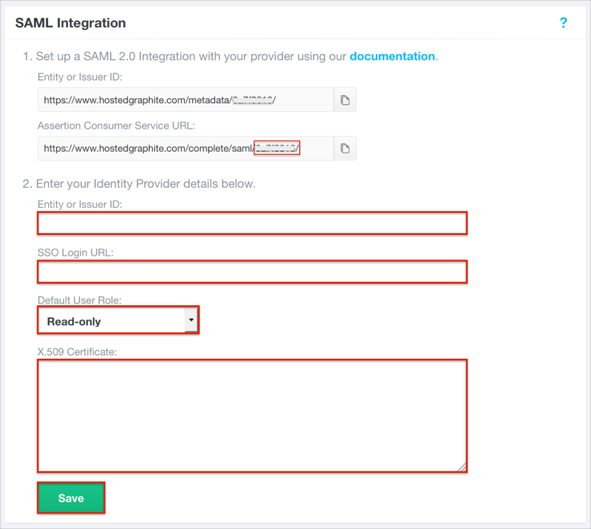

Login to Hosted Graphite as an administrator.
Navigate to Access > SAML Setup and do the following (see screen shot at end of step for reference):
Make a note of the last part (User ID) of the Assertion Consumer Service URL
For example, if your ACS URL is https://www.hostedgraphite.com/complete/saml/12345678/, you need to make a note of 12345678.
Entity of Issuer ID: Copy and paste the following:
Sign into the Okta Admin Dashboard to generate this variable.
SSO Login URL: Copy and paste the following:
Sign into the Okta Admin Dashboard to generate this variable.
Select Default User Role for the new user.
X.509 Certificate: Copy and paste the following (PEM text format):
Sign into the Okta Admin Dashboard to generate this variable.
Click Save.

In Okta, select the General tab for the Hosted Graphite app, then click Edit.
Enter the User ID you saved from the Assertion Consumer Service URL from Hosted Graphite (see above).
Click Save.
Notes:
IDP-initiated flows, SP-initiated flows, and Just In Time (JIT) Provisioning are all supported.
Open https://www.hostedgraphite.com/login/saml/[yourSsoId]/ page.